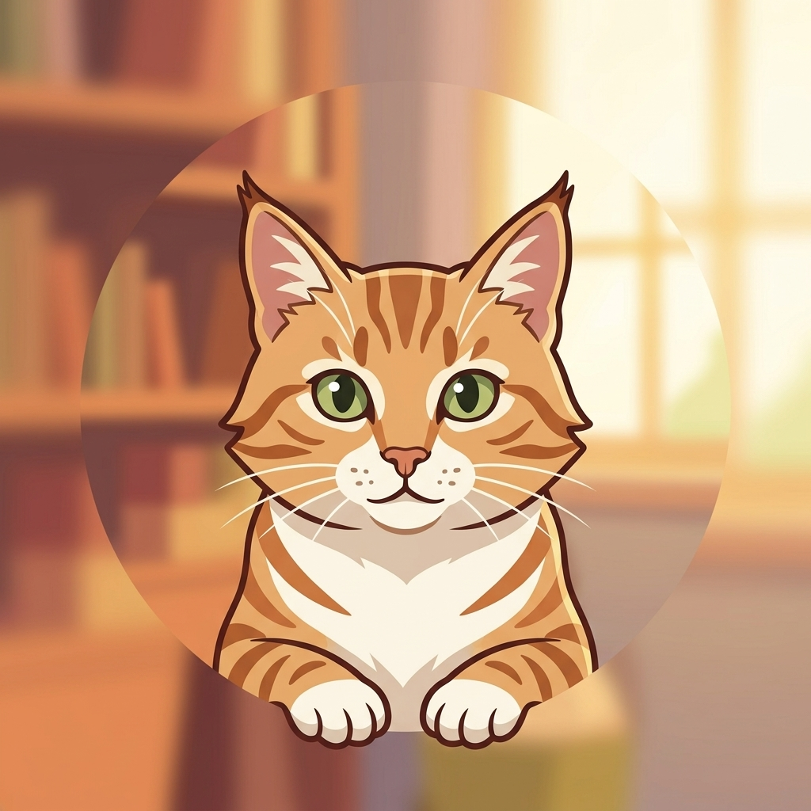

Global Popularity
Badminton is played by millions of people worldwide, making it one of the most popular racket sports. From local community centers to international tournaments, the sport has a vibrant and passionate community.
Smash is the ultimate destination for badminton enthusiasts. Whether you're a seasoned player or a beginner, our fansite provides everything you need to know about the sport, from rules and fun facts to a gallery of action-packed photos.
Badminton is played by millions of people worldwide, making it one of the most popular racket sports. From local community centers to international tournaments, the sport has a vibrant and passionate community.
Badminton is easy to pick up and enjoy, making it a great sport for people of all ages and skill levels. Whether you're playing casually with friends or competing in organized matches, the game is always fun and engaging.
It's not just about hitting hard. It's high-speed chess on a court, requiring deep strategy, endurance, and precise drop shots.
We are a passionate group of developers and badminton enthusiasts who wanted to build a space to celebrate the sport we love.

Amelia Reese
Lead Developer & Racket Enthusiast
Daihuizi Zhu
Content Strategist & Smash Specialist
Jie Yang
UI/UX Designer & Net Play Pro
Shameka Edwards
Backend Logic & Tournament Guru
Connect with fellow badminton enthusiasts, share your experiences, and be part of our vibrant community. Whether you're looking for tips, want to organize local matches, or just want to chat about the sport, Smash is the place to be.
Email us at contact@smash.com for any inquiries or feedback.